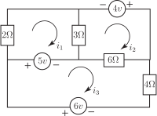

4 Engineering Example 3
4.1 Currents in three loops
In the circuit shown find the currents in the loops.
Figure 2

Solution
Loop 1 gives
Loop 2 gives
Loop 3 gives
Note that in loop 3, the current generated by the 6
cell is positive and for the 5
cell negative in the direction of the arrow.
In matrix form
Solving gives